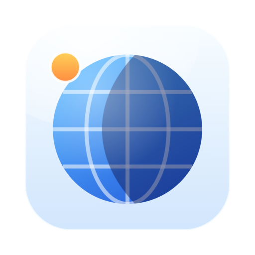

Zonette
Minden időzóna, ami fontos neked, egy kattintásnyira.
Mire jó
A Zonette a menüsorban lakik egy kis földgömbként, vagy egy-két általad választott város idejeként. Kattints rá, és egyszerre látod az összes városodat.
- A városaid, most: minden város ideje, hogy ott nappal van-e vagy éjszaka, és mennyivel jár előtted vagy mögötted. Keress 34 000 város között név, más írásmód vagy ország szerint, és adj nekik saját nevet, például Anya vagy Központ.
- Nappal és éjszaka egy világtérképen, minden városodnak egy ponttal.
- Megbeszélés-tervező: minden város napja a tiéd alatt, a munkaidő zölddel jelölve. Húzd egy időpontra, és mindenhol látod, nézd meg, mikor dolgozik mindenki, és másold ki az időpontokat, hogy beilleszd egy meghívóba.
- A következő eseményeid minden város idejében, ha bekapcsolod. A Zonette csak olvassa a naptáradat.
- A menüsorban: legfeljebb két város ideje a földgömb mellett vagy helyette.
macOS 14 Sonoma vagy újabb szükséges.
Adatvédelem egy bekezdésben
A Zonette-nek nincs hálózati hozzáférése, fiókja és követése. A városlista és a térkép az appal együtt érkezik. Ha bekapcsolod az eseményeket, a Maceden olvassa a naptáradat, és soha semmit nem küld sehová. A teljes adatvédelmi irányelvek ugyanezt mondják el részletesebben.
További appok ugyanattól a fejlesztőtől
Kis appok, mindegyik arra készült, hogy egy dolgot jól csináljon. Nincs fiók, nincs reklám, és egyik sem követ nyomon.
 StatuetteCPU, memória, lemez és hálózat a menüsorban.Mac
StatuetteCPU, memória, lemez és hálózat a menüsorban.Mac TocketteIdőzítő, egy húzásnyira a menüsortól.Mac
TocketteIdőzítő, egy húzásnyira a menüsortól.Mac LunetteA Hold és a Nap egy pillantásra.MaciPhone és iPadAndroid
LunetteA Hold és a Nap egy pillantásra.MaciPhone és iPadAndroid LunaretteA holdnaptár négy hagyomány szerint.MaciPhone és iPadAndroid
LunaretteA holdnaptár négy hagyomány szerint.MaciPhone és iPadAndroid PausetteKíméletes szünetek a szemednek és a hátadnak.Mac
PausetteKíméletes szünetek a szemednek és a hátadnak.Mac PoisetteÜlj egyenesen – a füledben lévő AirPods emlékeztet.MaciPhone és iPad
PoisetteÜlj egyenesen – a füledben lévő AirPods emlékeztet.MaciPhone és iPad HushetteNyugodt háttérhangok, amelyek sosem ismétlődnek.MaciPhone és iPadAndroid
HushetteNyugodt háttérhangok, amelyek sosem ismétlődnek.MaciPhone és iPadAndroid TapsodyMechanikus billentyűzet hangja gépelés közben.Mac
TapsodyMechanikus billentyűzet hangja gépelés közben.Mac ThrumlineA pulzusod élőben a menüsorban.Mac
ThrumlineA pulzusod élőben a menüsorban.Mac NightjarÉbren tartja a Macet. Becsszóra.Mac
NightjarÉbren tartja a Macet. Becsszóra.Mac UmbretteMinden elsötétül, csak az ablak nem, amelyben dolgozol.Mac
UmbretteMinden elsötétül, csak az ablak nem, amelyben dolgozol.Mac PrompetteTeleprompter közvetlenül a kamera alatt.MaciPhone és iPadAndroid
PrompetteTeleprompter közvetlenül a kamera alatt.MaciPhone és iPadAndroid TallettePapírszalag az összeadásaidhoz.MaciPhone és iPadAndroid
TallettePapírszalag az összeadásaidhoz.MaciPhone és iPadAndroid ProbetteEgy médiafájl minden műszaki adata, érthetően.MaciPhone és iPadAndroid
ProbetteEgy médiafájl minden műszaki adata, érthetően.MaciPhone és iPadAndroid BindetteHangfájlokból egyetlen rendes hangoskönyv.MaciPhone és iPadAndroid
BindetteHangfájlokból egyetlen rendes hangoskönyv.MaciPhone és iPadAndroid LettretteNyisd meg a winmail.dat és .msg fájlokat úgy, ahogy elküldték őket.MaciPhone és iPad
LettretteNyisd meg a winmail.dat és .msg fájlokat úgy, ahogy elküldték őket.MaciPhone és iPad Nhanh TayÁllíts sorba négy választ. Gyorsan.iPhone és iPadAndroid
Nhanh TayÁllíts sorba négy választ. Gyorsan.iPhone és iPadAndroid